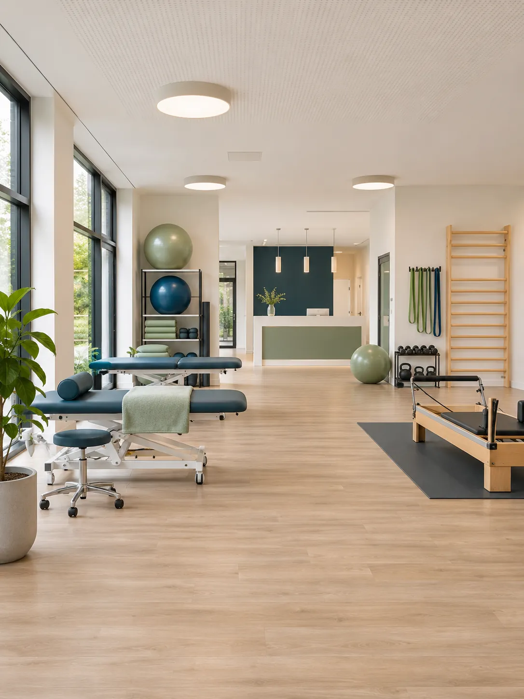

Clínica pronta no prazo, dentro da norma.
Projetos de arquitetura para a área da saúde: fluxo claro entre paciente e equipe, exigências da vigilância sanitária atendidas e um ambiente que acolhe.

Arquitetura que trabalha junto com a sua equipe.
O Eixo Saúde Arquitetura projeta clínicas e consultórios em Niterói. Conhecemos a rotina de quem atende e o que a vigilância sanitária espera.
Cada projeto parte de um eixo: o caminho do paciente, da porta de entrada até o fim do atendimento.
Fluxo antes de estética
O layout resolve a rotina da equipe e depois ganha beleza.
Norma sem burocracia
Exigências tratadas no início, sem retrabalho.
Prazo combinado
Cronograma claro para a clínica abrir quando planejado.
Espaços de saúde com
fluxo e acolhimento
Clínicas, consultórios e centros de diagnóstico em Niterói.
Tudo o que a sua clínica precisa para abrir
Do layout à entrega da obra, em um só escritório.
Projeto de clínicas
Layout, programa de necessidades e identidade do ambiente.
Fluxos e vigilância sanitária
Circulação de paciente, equipe e material conforme a RDC 50.
Acessibilidade
Rotas, banheiros e acessos de acordo com a NBR 9050.
Compatibilização
Elétrica, hidráulica, ar-condicionado e gases alinhados ao projeto.
Acompanhamento de obra
Visitas técnicas e controle de cronograma até a inauguração.
Reforma e ampliação
Adequação de espaços em funcionamento, com o mínimo de pausa.
Do briefing à inauguração
Quatro etapas claras, com prazo definido em cada uma.
Briefing de fluxo
Entendemos a especialidade, a equipe e como o paciente circula.
1 semanaEstudo e layout
Apresentamos o layout com fluxos e a identidade do ambiente.
2 a 3 semanasProjeto e aprovação
Projeto executivo e documentos para a vigilância sanitária.
4 a 6 semanasObra e entrega
Acompanhamos a obra até a clínica abrir as portas.
Conforme a obraVamos planejar a sua clínica?
Conte a especialidade, o tamanho do espaço e a data que vocês querem abrir. Respondemos com os próximos passos.